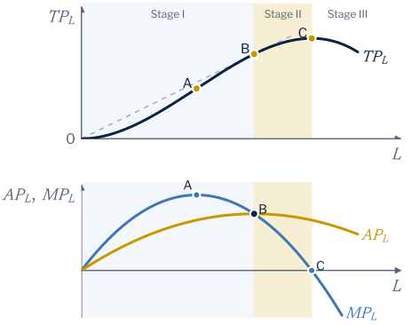
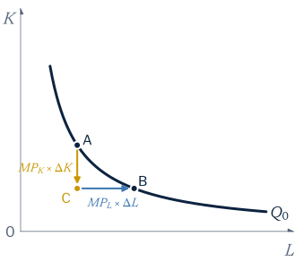
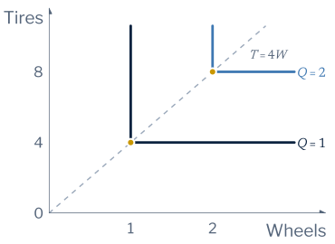
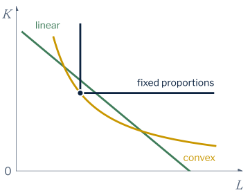

Lesson 6
FIN 30210 Managerial Economics
Jason R. Reed, PhD, University of Notre Dame
Output elasticity of labor The percentage change in output from a percentage change in labor.
\[ \varepsilon_L = \frac{\%\,\Delta Q}{\%\,\Delta L} = \left(\frac{\partial Q_L}{\partial L}\right)\left(\frac{L}{Q_L}\right) = MP_L\left(\frac{1}{AP_L}\right) = \frac{MP_L}{AP_L} \]
It’s the ratio of the marginal product of labor to the average product of labor.
Suppose we have the Cobb-Douglas production function
\[ Q = AK^{\alpha}L^{\beta}, \quad \text{where } 0 < \alpha < 1,\; 0 < \beta < 1, \text{ and } A > 0 \]
For diminishing marginal returns, take the first and second derivatives, as before:
\[ MP_L = \frac{\partial Q}{\partial L} = \beta AK^{\alpha}L^{\beta - 1} = \frac{\beta AK^{\alpha}L^{\beta}}{L} = \frac{\beta Q}{L} > 0 \]
\[ MP_L' = \frac{\partial^2 Q}{\partial L^2} = \beta(\beta - 1)AK^{\alpha}L^{\beta - 2} = \frac{\beta(\beta - 1)AK^{\alpha}L^{\beta}}{L^2} = \frac{\beta(\beta - 1)Q}{L^2} < 0 \]
The second derivative is negative because \(0 < \beta < 1\) makes \(\beta - 1 < 0\).
\[ \varepsilon_L = \left(\frac{\partial Q_L}{\partial L}\right)\left(\frac{L}{Q_L}\right) = \frac{MP_L}{AP_L} = \left(\frac{\beta Q}{L}\right)\left(\frac{L}{Q}\right) = \beta \]
For Cobb-Douglas production functions, the exponent on each input is that input’s output elasticity.
Problem 6.0 Given the production function \(Q = 10K^{0.5} + 2L\), with \(K = 4\) and \(L = 2\), what is the output elasticity of capital?
\[ Q = 10(4)^{0.5} + 2(2) = 24 \]
\[ \varepsilon_K = \frac{\partial Q}{\partial K} \cdot \frac{K}{Q} = 5K^{-0.5} \cdot \frac{K}{Q} = 5(4)^{-0.5} \cdot \frac{4}{24} = 0.42 \]
The top panel is total product. The bottom panel is marginal and average product.

Stage I
\(MP > AP\), so adding labor pulls average productivity up. If wages and rental prices stay constant, more labor makes the average worker more productive and raises average profit per worker. Firms wouldn’t stop here, since profits could be higher if they kept raising average productivity.
Stage II
\(MP\) is positive but less than \(AP\), so added labor pulls \(AP\) down. With diminishing marginal product, average revenue and profit per worker are falling. This is where firms want to employ labor and produce.
Stage III
Begins where \(MP < 0\) and continues indefinitely. Average profits fall as labor increases because marginal product is negative. As with Stage I, production won’t take place here.
Capital and labor will be within the boundaries of Stage II. We don’t know the exact amounts yet.
An isoquant is the combination of capital and labor (or any other set of inputs) necessary to produce a fixed level of output.
\[ Q = Q_0 = f(K, L) \]
Take \(Q = 15K^{0.5}L^{0.75}\). Once \(Q\) is fixed, solve for \(K\) in terms of \(L\) (or \(L\) in terms of \(K\)).
Let \(Q = 200\): \(\quad 200 = 15K^{0.5}L^{0.75}\)
Isolate \(K\): \(\quad \dfrac{200}{15L^{0.75}} = K^{0.5} \;\Rightarrow\; K = \left(\dfrac{200}{15L^{0.75}}\right)^{\frac{1}{0.5}}\)
\[ K = \left(\frac{200}{15}\right)^2 L^{-1.5} \]
This is the equation of the isoquant.
Iso means equal and quant means quantity. We now treat capital, \(K\), as the dependent variable and labor, \(L\), as the independent variable, which lets us substitute between them.
The slope of the isoquant measures the substitution between capital and labor when output is fixed. That slope is the marginal rate of technical substitution (MRTS):
\[ MRTS_{KL} = \frac{\partial K}{\partial L} = -\frac{MP_L}{MP_K} \]

Problem 6.1 Given \(Q = 15K^{0.5}L^{0.75}\), solve for \(MRTS_{LK}\) using both methods when \(Q = Q_0\).
Solve the isoquant, then differentiate
\(L = \left(\dfrac{Q_0 K^{-0.5}}{15}\right)^{\frac{1}{0.75}} = \left(\dfrac{Q_0}{15}\right)^{\frac{4}{3}} K^{-\frac{2}{3}} \;\Rightarrow\; MRTS_{LK} = \dfrac{dL}{dK} = -\dfrac{2}{3}\left(\dfrac{Q_0}{15}\right)^{\frac{4}{3}} K^{-\frac{5}{3}}\)
Take the ratio of marginal products
\(MRTS_{LK} = -\dfrac{MP_K}{MP_L} = -\dfrac{\left(\frac{1}{2}\right)15K^{-0.5}L^{0.75}}{\left(\frac{3}{4}\right)15K^{0.5}L^{-0.25}} = -\dfrac{2}{3}\cdot\dfrac{L}{K}\)
Substituting the isoquant for \(L\) in the second answer gives the first.
The relationship highlights a mathematical property of isoquants: they’re convex.
\[ \frac{dK}{dL} < 0 \quad \text{and} \quad \frac{d^2K}{dL^2} > 0 \]
\[ \frac{dK}{dL} < 0 \quad \text{and} \quad \frac{d^2K}{dL^2} = 0 \]

To build a car we need 4 tires and 1 steering wheel. Suppose we have 6 tires and 2 wheels.
\[ Q = \min\left(\tfrac{1}{4}\,\text{Tires},\; \tfrac{1}{1}\,\text{Wheels}\right) \]
\[ Q = \min\left(\tfrac{1}{4}(6),\; \tfrac{1}{1}(2)\right) = \min(1.5,\; 2) = 1.5 \text{ cars} \]
Or 1 car, if we need whole units. Every efficient input combination lies on the ray through the origin where \(\tfrac{1}{4}\text{Tires} = \text{Wheels}\), or \(T = 4W\).

Start from the same point and make equal reductions in capital.
Problem 5.5 The general Cobb-Douglas production function is \(Q = AK^{\alpha}L^{\beta}\), where \(A > 0\), \(0 < \alpha < 1\), and \(0 < \beta < 1\).
Isoquant
Fix output at \(Q_0 = AK^{\alpha}L^{\beta}\). Then \(K^{\alpha} = Q_0 A^{-1} L^{-\beta}\), so \(K = Q_0^{1/\alpha} A^{-1/\alpha} L^{-\beta/\alpha}\).
Downward sloping
\(\dfrac{\partial K}{\partial L} = \left(-\dfrac{\beta}{\alpha}\right) Q_0^{1/\alpha} A^{-1/\alpha} L^{-\beta/\alpha - 1} < 0\), since \(-\beta/\alpha < 0\) and the rest is positive.
Convex
\(\dfrac{\partial^2 K}{\partial L^2} = \left[-\dfrac{\beta}{\alpha} - 1\right]\left(-\dfrac{\beta}{\alpha}\right) Q_0^{1/\alpha} A^{-1/\alpha} L^{-\beta/\alpha - 2} > 0\), since the product of the two negative brackets is positive.
We need an estimation technique.
\[ Q = AK^{\alpha}L^{\beta} \]
Take the natural log of each variable:
\[ \ln Q = \ln A + \alpha \ln K + \beta \ln L \]
Up next: Lesson 7
FIN 30210 Managerial Economics